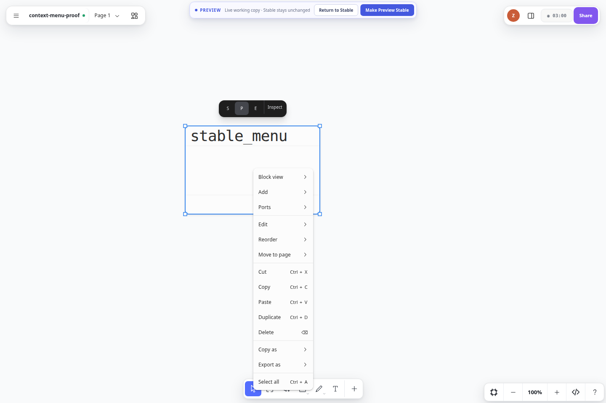

Checked Simple, Port, and Expanded choices use the Block’s remembered per-view boxes. No size is recomputed in the menu.
SystemSketch · Stable candidate · 1 Sep 2026
Pyblocks’ right-click authoring is now native SystemSketch UI.
Right-click chooses structure, then the existing on-block editor owns the value. The stock tldraw menu stays intact below the semantic commands, so the feature adds capability without creating a second inspector or a second document model.
9 / 9 physical browser checks
100 / 100 Vitest checks
24 / 24 Python checks
Production build verified

One gesture, one command path
Right-clicktldraw selects the concrete Block or cable.
Choose structureView, Add, Ports, Advanced, or Routing.
Write onceExisting commands mutate the canonical shape props.
Edit in placeNew fields and ports focus the existing inline editor.
Persist normallyThe ordinary
.tldr workspace owns the result.What landed
Input and Output allocate stable IDs. Icon, Description, and Type appear only while missing, then immediately enter the existing on-canvas editor.
Checked Offset and Aligned choices write the same occurrence-local portLayout read by the inspector, renderer, and cable anchors.
Expanded Blocks can Step into the existing structural depth scope. Selected connections expose checked Curved and Straight routing choices.
Executed evidence
| Journey | Observed result | Status |
|---|---|---|
| Native menu composition | Semantic group rendered first; stock tldraw commands remained present and interactive. | PASS |
| View transition | Port was checked; selecting Simple changed the real Block, and later Expanded restored its saved box. | PASS |
| Add input from Simple | Created in_1, revealed Port view, focused the generated name, and committed request. | PASS |
| Add fields | Description and Type opened their existing inline editors; completed fields disappeared from Add. | PASS |
| Port layout | Offset became checked and the inspector reflected the same canonical state. | PASS |
| Advanced depth | Expanded → Advanced → Step into opened the real Depth Stack scope. | PASS |
| Product boundary | The essential right-click journey was repeated in the full product component registry. | PASS |
| Runtime health | Zero local console errors across the physical pointer and keyboard journey. | PASS |
Porting boundary
This ports the pyblocks menu behavior that has a real SystemSketch semantic target. Pyblocks-only linked-definition commands such as Duplicate unlinked were intentionally not copied: Stable has no linked occurrence model, and stock Duplicate already creates an independent Block. Tidy, cable nudging, insertion, and authored-route reset remain outside this menu until their underlying algorithms exist in SystemSketch.
Implementation: BlockContextMenu.tsx · commands: blockCommands.ts and connectionCommands.ts · physical proof: block_context_menu_smoke.mjs.